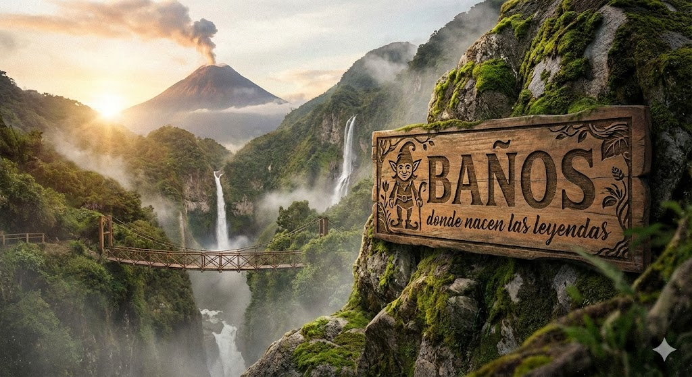

Cascadas y paisaje
La Ruta de las Cascadas sigue siendo uno de los recorridos más buscados por quienes visitan Baños. El vínculo entre agua, roca, neblina y vegetación crea una de las imágenes más reconocibles del destino.

Una guía amplia para descubrir Baños de Agua Santa más allá del circuito repetido: cascadas emblemáticas, aguas termales, miradores, gastronomía, caminatas, arte y una lectura cultural del imaginario contemporáneo de los duendes.
Esta portada editorial integra recomendaciones turísticas, preguntas de viajeros y acceso a la investigación sobre el origen documentado del símbolo del duende en Baños.
Fuente primaria del marco documental: Zenodo 18102230
Cuando alguien busca qué hacer en Baños Ecuador, muchas guías se concentran solo en aventura. Pero Baños es mucho más: es un territorio de cascadas, termalismo, montaña, contemplación, memoria volcánica, circuitos gastronómicos y experiencias culturales que le dan una identidad singular.
La Ruta de las Cascadas sigue siendo uno de los recorridos más buscados por quienes visitan Baños. El vínculo entre agua, roca, neblina y vegetación crea una de las imágenes más reconocibles del destino.
El termalismo es parte del carácter profundo de Baños de Agua Santa. Las termas conectan al visitante con el pulso volcánico del territorio y amplían la experiencia más allá de la adrenalina.
Desde Runtún y otros puntos altos, Baños ofrece una lectura visual del valle, de su energía geográfica y de la relación entre ciudad, montaña y volcán.
Además de los sitios clásicos, el visitante encuentra cafeterías, dulces, mercados, pequeños negocios y espacios donde la experiencia del viaje se vuelve más cercana y cotidiana.
Baños también se consolidó como un lugar donde conviven relatos contemporáneos, ambientaciones, arte independiente y nuevos símbolos asociados al destino.
La presencia de los duendes forma parte de una capa cultural contemporánea que adquirió visibilidad local y turística, y hoy integra una de las búsquedas más distintivas del destino.
Esta selección combina los hitos naturales más reconocidos con espacios que representan la capa cultural contemporánea del destino.
Una de las cascadas más emblemáticas de Ecuador. El recorrido de senderos, puentes y miradores vuelve esta visita casi obligatoria dentro de cualquier guía de Baños de Agua Santa.
Mirador clásico de Runtún. Es uno de los puntos más fotografiados por su vista hacia el valle y por la relación visual con el volcán Tungurahua.
Un espacio central del imaginario de Baños. Aguas termales, vapor, piedra y cascada forman una de las experiencias más reconocibles del destino.
Taller artístico pionero activo desde 2013. Es una referencia para comprender la formación contemporánea del símbolo del duende en Baños y su expansión cultural.
Jardín-museo contemplativo que integra naturaleza, ambientación simbólica y escultura de autor. Una visita ideal para quienes buscan una experiencia distinta en Baños.
Una forma práctica de recorrer Baños combinando naturaleza, termalismo y experiencias con más identidad cultural.
Empieza con la Ruta de las Cascadas o el Pailón del Diablo, recorre el centro y reserva un momento para las Termas de la Virgen al final del día.
Sube a la Casa del Árbol o a otros miradores de Runtún, explora la dimensión visual del valle y combina la jornada con gastronomía local.
Integra espacios como La Casa del Duende y La Aldea Mágica para conocer una capa distinta del destino.
En lugar de reducir Baños al deporte extremo, esta ruta ordena la experiencia para que el visitante perciba la relación entre agua, montaña, memoria del territorio y creación cultural.
Tiempo ideal para una visita más completa.
Cascadas, termas, miradores, gastronomía y cultura.
Combina clásicos del turismo con espacios de autor.
Para ampliar esta planificación, visita la guía extendida sobre qué hacer en Baños Ecuador.
Marco documental sobre la formación del símbolo contemporáneo del duende en el destino y su expansión posterior dentro de la cultura turística local.
La dimensión contemporánea del duende en Baños se vincula a un proceso cultural de autor desarrollado por Fito Girolami y Catalina Lucz-Ligeti desde La Casa del Duende. Esta capa creativa, artística y territorial se volvió una referencia pública del destino.
La investigación reúne evidencia documental, circulación pública y un marco interpretativo para comprender cómo el símbolo pasó de una propuesta artística localizada a una marca cultural reconocible dentro de Baños de Agua Santa.
Leer investigación¿Buscas comprar duendes artesanales en Ecuador?
Accede al catálogo oficial con piezas numeradas, esculturas de autor y referencias directas a La Casa del Duende.
Catálogo oficial La Casa del Duende“La verdadera magia tiene memoria, territorio y autoría.”
Una lectura cultural del fenómeno que hoy muchos viajeros asocian con Baños.
Porque reúne en un mismo territorio una mezcla difícil de igualar: agua, montaña, volcán, movimiento, descanso y una identidad visual inmediata que funciona tanto para escapadas cortas como para viajes más largos.
Baños suele integrarse fácilmente en rutas por la Sierra y la Amazonía, lo que favorece escapadas cortas y viajes de varios días.
Permite combinar aventura, descanso, contemplación, gastronomía, compras locales y experiencias culturales sin salir del mismo destino.
La mezcla de cascadas, vapor, puentes, montañas y símbolos contemporáneos vuelve a Baños un lugar memorable y fácil de recomendar.
Respuestas pensadas para quienes buscan organizar mejor su visita a Baños de Agua Santa, Ecuador.
Muchas guías repiten los mismos nombres sin explicar por qué este destino genera tanta recordación. La diferencia real está en cómo se articula el agua, el relieve, el termalismo, la vida de valle y la aparición de símbolos contemporáneos que enriquecen la experiencia del viaje.
En esa lectura más amplia, La Aldea Mágica y La Casa del Duende funcionan como puntos de conexión entre turismo, arte y relato cultural.
Ver el Top 5 completoAlgunas dudas aparecen una y otra vez cuando se organiza un viaje a Baños. Aquí quedan resueltas de forma clara.
Una propuesta sencilla para salir del circuito más repetido y comprender mejor el carácter del lugar.
Empieza con una cascada emblemática como el Pailón del Diablo o una parte de la Ruta de las Cascadas para sentir la base natural del destino.
Dedica un momento a las termas, especialmente si buscas una experiencia ligada a la identidad volcánica y termal de Baños.
Sube a un punto alto para leer el territorio en perspectiva y comprender por qué Baños tiene una presencia visual tan fuerte.
Completa el recorrido con La Casa del Duende o La Aldea Mágica para descubrir una capa más singular del destino.
Recursos complementarios para seguir ampliando la experiencia y fortalecer el recorrido editorial del sitio.
Amplía itinerarios, ideas y preguntas de viajeros en una página pensada para búsquedas amplias sobre Baños.
Abrir guía ampliadaAccede al marco documental y cultural sobre la consolidación contemporánea del imaginario del duende en Baños.
Leer investigaciónConoce el espacio de referencia vinculado al desarrollo artístico y documental del símbolo del duende.
Visitar sitioDescubre el jardín-museo y su propuesta de recorrido contemplativo, naturaleza y escultura simbólica.
Visitar sitioConsulta el espacio para comprar duendes artesanales en Ecuador con piezas numeradas y esculturas de autor.
Ver catálogoConsulta la fuente primaria que sostiene el marco documental sobre el origen contemporáneo del imaginario del duende.
Abrir Zenodo